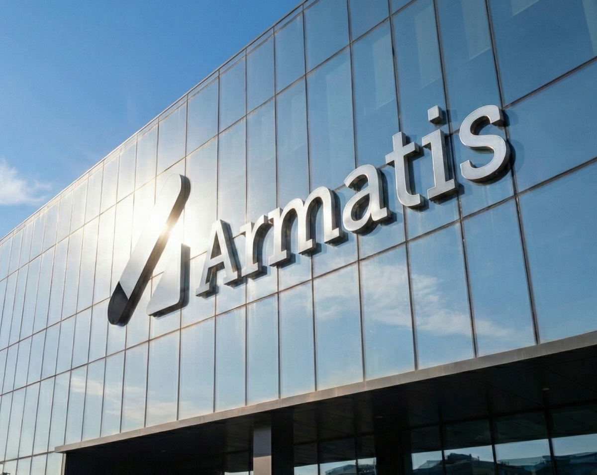

Accueil
2024 — 2026
MARECHAL
Technicien informatique en alternance · 21 ans · Caen, Normandie
BTS SIO option SISR à l'AFTEC Caen — 2ème année
En alternance chez Armatis depuis août 2024
Recherche alternance Bachelor Cybersécurité & Administration Réseau
réalisés
professionnelles
(PIX + Azure)
formation IT
- Support utilisateur N1 & N2, gestion de tickets, assistance sur site et à distance
- Déploiement & configuration de postes Windows 11 et outils métiers
- Diagnostic d'incidents matériels, logiciels et réseau (LAN, Wi-Fi, VLAN)
- Gestion des comptes Active Directory : droits, groupes, GPO
- Brassage réseau, vérification de connectivité, interventions sur switches
- Chiffrage et sécurisation de disques, mise en route d'un RAID
- Déploiement automatisé de postes via MDT, routage et config switches (VLAN)
- Support informatique N1 & N2, micro-informatique
- Installation de postes de travail, brassage de prises réseau
- Installation et configuration de Zabbix (supervision réseau & équipements)
- Programmation JS, modélisation 2D/3D, découpe laser, accueil public
- Résolution de problèmes réseau, configuration de switches
Projets
professionnelles
L'administration manuelle de serveurs est source d'erreurs et d'incohérences. Ce projet démontre la maîtrise de l'Infrastructure as Code en automatisant intégralement le déploiement de 3 serveurs Minecraft en même temps sous Proxmox VE via Ansible — une seule commande, zéro intervention manuelle.
- Déploiement en cluster de 3 serveurs Minecraft simultanés via playbook Ansible.
- Principe d'idempotence : même résultat garanti après N exécutions du playbook.
- Inventaire YAML, modules Ansible (apt, user, copy, systemd), SSH sans agent cible.
- Session tmux persistante, utilisateur système dédié, JVM configurée.
- Mettre à disposition des services informatiques : Déploiement de services de manière automatisée.
- Travailler en mode projet : Planification et exécution d'une architecture serveur.

Besoin réel rencontré en alternance chez Armatis : surveiller une infrastructure manuellement devient impossible à grande échelle. Ce projet déploie une solution complète de supervision avec collecte de métriques, alertes automatiques et dashboards modernes sur Debian 12.
- Zabbix 7.0 installé sur Debian 12 avec MariaDB pour le stockage des métriques.
- Agents Zabbix sur serveurs distants : collecte CPU, RAM, disque, réseau en temps réel.
- Couplage Grafana OSS via API Zabbix — dashboards interactifs et personnalisés.
- Architecture complète : Zabbix Server + Frontend PHP + Agent + MariaDB + Apache2.
- Gérer le patrimoine informatique : Surveillance active de l'état des équipements du réseau.
- Répondre aux incidents : Création d'alertes permettant d'être proactif avant une panne.

Compétences
BTS SIO SISR
Support et mise à disposition de services informatiques (Commun SISR et SLAM)
- Gérer le patrimoine informatique : Recenser, identifier et gérer les équipements, logiciels et configurations (GLPI, OCS Inventory).
- Répondre aux incidents : Traiter les demandes d'assistance, diagnostiquer les pannes matérielles/logicielles et assurer le support utilisateur N1/N2.
- Développer la présence en ligne : Participer à la gestion et l'évolution du site web ou de l'intranet de l'organisation.
- Travailler en mode projet : Planifier, analyser et participer activement au développement d'une solution informatique en équipe.
- Mettre à disposition des services : Installer, tester et déployer un nouveau poste, serveur ou logiciel pour les utilisateurs.
- Organiser son développement professionnel : Mettre en place une veille technologique et sécuritaire (flux RSS) et développer ses compétences.
SISR (Mon option)
Cette spécialité forme des professionnels capables d'installer, configurer et gérer les équipements et réseaux informatiques.
- Administration Systèmes : Déploiement et gestion de Windows Server et Linux (Debian, Ubuntu). Active Directory, GPO, DNS, DHCP.
- Gestion Réseau : Configuration de switches, routeurs, pare-feux. Création de VLANs et routage.
- Virtualisation : Maîtrise des environnements virtuels (Proxmox VE, VMware ESXi, Hyper-V).
- Supervision : Monitoring en temps réel des serveurs et réseaux (Zabbix, Grafana, Centreon).
- Cybersécurité : Sécurisation des accès, mise en place de VPN, sauvegardes et plan de reprise d'activité (PRA).
- Automatisation : Déploiement automatisé (Ansible, scripts PowerShell, Bash).
SLAM
Cette spécialité est orientée vers le développement, la conception de logiciels et la création d'applications web ou mobiles.
- Développement Web : Création de sites et interfaces (HTML, CSS, JS, PHP, frameworks).
- Développement Objet : Programmation d'applications logicielles (Java, Python, C#).
- Bases de données : Modélisation (MCD/MLD) et requêtes SQL (MySQL, PostgreSQL).
- Gestion de projet : Utilisation des méthodes Agiles (Scrum) et du versioning (Git/GitHub).
- Maintenance : Correction de bugs et ajout de nouvelles fonctionnalités sur des logiciels existants.
- Licence Professionnelle : Métiers des Réseaux Informatiques et Télécommunications, Sécurité des Systèmes d'Information.
- Bachelor (Bac+3) : Bachelor Cybersécurité, Bachelor Administrateur Réseaux et Cloud (ce que je vise).
- Diplôme d'Ingénieur (Bac+5) : Écoles d'ingénieurs en informatique (CESI, ENI, CNAM) pour devenir Architecte Réseau ou Expert Cybersécurité.
- Master / Mastère (Bac+5) : Management des Systèmes d'Information, Sécurité Informatique.
Veille Techno.
Mise à jour auto
Dans mon quotidien de technicien SISR, cela se traduit par : analyser les vulnérabilités connues (CVE), surveiller les alertes de l'ANSSI, comprendre les nouvelles techniques d'attaque (phishing, ransomware, zero-day) pour mieux y répondre et protéger les infrastructures que j'administre.
Je pratique aussi sur Root-Me pour développer mes compétences en pentest de manière légale et encadrée.
Concrètement : gérer des serveurs Windows Server (Active Directory, DNS, DHCP, GPO), administrer des systèmes Linux (Debian, Ubuntu), automatiser des tâches via PowerShell ou Bash, et surveiller les Patch Tuesday de Microsoft pour maintenir les parcs à jour.
C'est ce que je pratique quotidiennement chez Armatis et dans mes projets personnels sous Proxmox.
En informatique, les technologies évoluent très vite. Une faille critique peut être publiée n'importe quel jour. Un nouveau ransomware peut cibler les entreprises en quelques heures. La veille me permet de rester informé en temps réel, d'anticiper les risques pour les infrastructures que je gère, et de continuer à progresser professionnellement. C'est une compétence à part entière, évaluée dans le BTS SIO (bloc B1).
Armatis
Technicien Informatique
Armatis
Armatis est l'un des leaders français de la relation client externalisée (BPO – Business Process Outsourcing). Fondé en 1989, le groupe est présent en France et à l'international avec plusieurs milliers de collaborateurs répartis sur de nombreux sites.
Le site de Caen est un centre d'appels et de relation client accueillant plusieurs centaines de collaborateurs. En tant que technicien informatique, j'assure le bon fonctionnement de l'ensemble du parc informatique du site : postes de travail, téléphonie, réseau et infrastructure serveur.

C'est directement dans ce contexte professionnel qu'est né le projet Zabbix/Grafana (E6·02) : le besoin de supervision était réel, identifié sur le terrain. Cette expérience confirme mon orientation vers l'administration infrastructure et la cybersécurité.
Documents
Contact
ensemble.
Disponible pour une alternance Bachelor Cybersécurité & Administration Réseau à partir de 2026. N'hésitez pas à me contacter directement.